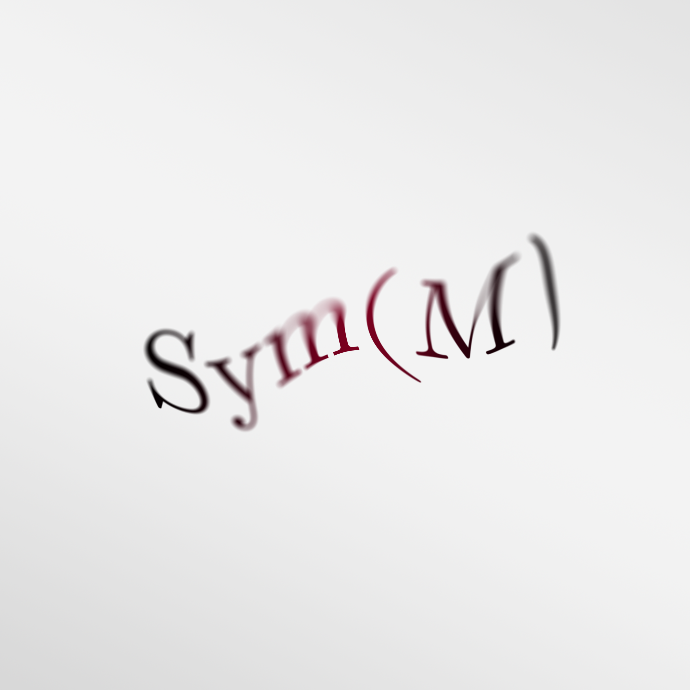

Permutation Symmetry G-Map and Invariance: Sets, Graphs, Simplicial Complexes, and Cell Complexes

Summary
Sets and graphs
Graphs offer a versatile and easily analysable structure that extends sets by incorporating relationships between entities. We will explore this domain by considering both the basic structure of sets and the more intricate structure of topological graphs, focusing on permutation group invariance and equivariance.
A set \( S = (V) \) consists of nodes \( V = \{v_1, v_2, \ldots, v_n\}\). A graph \({\Gamma = (V,E)}\), on the other hand, consists of nodes and edges, where \(E \subseteq V \times V\), i.e., edges are a subset of the Cartesian product of the nodes with themselves and form a set of pairs of nodes. In graph theory, edges \(E\) can be represented in an adjacency matrix \(\mathbf{A}\), which is a symmetric matrix where the value of 1 indicates a connection, or edge \((i,j)\), between two nodes \(i\) and \(j\), and 0 otherwise:
$$
a_{i j}= \begin{cases} 1 & \text{ if } (i,j) \in E \\ 0 & \text{ if } (i,j) \notin E \end{cases}
$$
Each node \(v_i\) contains a feature vector \(\mathbf{x}_i\), and these features lie in a channel space \( C = \mathbb{R}^k \). The node features are assembled into a matrix \(\mathbf{X}\) of shape \(n \times k\): \(\mathbf{X} = {(\mathbf{x}_1, \dots, \mathbf{x}_n)}^T\), associating the \(i\)-th row with \(\mathbf{x}_i\).
Although a particular node ordering in the set \(S\) or in the graph \(\Gamma\) is implied, it is essential for our purposes that the output of the neural network remains unaffected by this order. To achieve this, we use permutation-invariant functions capable of distilling an order-independent aggregate from the data. Such functions are fundamental in handling sets or unordered data collections where the element order lacks relevance.
Examples of permutation-invariant functions include statistical measures such as the mean, maximum, and sum. These functions operate on the set of features in a way that ignores their sequence, producing a consistent result.
Let \( G \) be a group acting on the set \( S \) and graph \(\Gamma\), and let \( \rho: G \rightarrow \text{GL}(V) \) be a group representation, where \(\text{GL}(V)\) is the general linear group of invertible matrices over a vector space \( V \). This representation encodes how the elements of \( G \) act on the set, the graph, and any other associated structures like the adjacency matrix and feature matrix.
The required symmetry group \( G = \mathrm{Sym}(M) \) here is the \( n \)-element permutation group. Each element \( g \in G \) represents a permutation. There are \( n! \) such permutations possible.
A function \( f(x) \) is said to be permutation invariant if \(\forall \rho(g) \in G\), \( f(\rho(g) x) = f(x) \). In linear-algebraic terms, \(\rho(g)\) corresponds to an \( n \times n \) matrix or permutation matrix \(\mathbf{X}\). Permutation matrices merely shuffle the rows of another matrix, which, in our case, is the node feature matrix \(\mathbf{X}\). We thus say that \( f(\mathbf{X}) \) is permutation invariant if \(\forall \mathbf{P}\), \( f(\mathbf{PX}) = f(\mathbf{X}) \), i.e., \( f(\mathbf{X}) \) is permutation group equivariant if it does not matter whether the permutation matrix \(\mathbf{P}\) is applied before or after applying the function \( f \); the function should return the same result. This property forms the foundation for designing functions resilient to permutations on sets.
Deep Sets zaheer2017 is often invoked as a standard way of implementing permutation invariance over sets and as a generic model capable of expressing any other permutation invariant model wagstaff2019.
The standard implementation of a permutation invariant function in a neural network may be expressed as \( f(\mathbf{X}) = \phi(\bigoplus_{i \in V} \psi(\mathbf{x}_i)) \),
where we compute outputs over the input set given by the node feature matrix \( \mathbf{X} \) by applying a learnable function \( \psi \) to every single node feature vector \( \mathbf{x}_i \), after which we aggregate the resulting vectors. Finally, to predict the outputs, we use another learnable function \( \phi \), applied over the output of the aggregate.
Here, \( \bigoplus \) represents a binary operation that combines two elements in a way that is insensitive to their order; it is any permutation-invariant operator.
Having an additional object — edges \( e_{ij} \) — in graphs means that the permutation matrix does not act only on the nodes, but also on the edges. Permutation invariance over graphs is thus expressed as:
$$
f(\rho(g)x, \rho(g) e_{ij}) = f(x, e_{ij}) \quad \forall \rho(g) \in G
$$
Edges are represented by an adjacency matrix \( \mathbf{A}$. Permuting $\mathbf{A}$ implies a permutation of both its rows and its columns. The permutation takes the linear-algebraic form \( \mathbf{PAP}^T$ and the invariance wrt permutation over graphs is expressed as \( f(\mathbf{PX},\mathbf{PAP}^T) = f(\mathbf{X},\mathbf{A}) \).
While permutation invariance is powerful for handling sets as a whole, it is less suitable for operations that depend on the specific position or identity of individual elements within the set.
A permutation-invariant aggregator does not recognise the order or specific identity of elements within a set. If the position or role of an individual node within the set carries important information (e.g., the first element represents a unique identifier), a permutation-invariant function would not consider it.
By treating all nodes equally and without considering their order, a permutation-invariant function might overlook specialised or role-based behaviors of individual nodes. In graph-based models, for instance, some nodes might have specific functions or relationships that are essential to the overall system's behavior. A permutation-invariant aggregator would not allow for this specialised treatment.
In tasks where the sequence or ordering of nodes matters (e.g., time-series data, natural language processing), applying a permutation-invariant function would disrupt the inherent sequence-based relationships between nodes. It would make the function unsuitable for modeling or predicting sequence-dependent phenomena.
For the outputs at the level of a node, we need functions that do not influence the node order. It should be so that permuting the nodes order can be done before or after those functions, such that every single node output can be identified afterward.
This leads us to the notion of \( G \)-map for the specific case of permutation group \( G = \mathrm{Sym}(M) \).
We say that \( f(x) \) is permutation group equivariant over sets if
$$
f(\rho(g)x) = \rho(g) f(x) \quad \forall \rho(g) \in G
$$
In linear-algebraic terms, this corresponds to
$\forall \mathbf{P}, f(\mathbf{PX}) = \mathbf{P}f(\mathbf{X})$, i.e.,
$f(\mathbf{X})$ is permutation equivariant if, regardless of what permutation matrix we choose, it does not matter whether $\mathbf{P}$ is applied before or after applying the function $f$; it should return the same result.
$G$-map wrt permutation over graphs is expressed as
$$
f(\rho(g)x, \rho(g) e_{ij}) = \rho(g) f(x, e_{ij}) \quad \forall \rho(g) \in G
$$
which corresponds to as $f(\mathbf{PX},\mathbf{PAP}^T) = \mathbf{P}f(\mathbf{X},\mathbf{A})$.
Simplicial complexes
Like with sets and graphs, we require a permutation $G$-map over simplicial complexes due to the possible relabeling of simplices in the complex.
One approach to permuting a simplicial complex $K$ of dimension $k$ is to permute the underlying $k=0$ simplices, or vertices. This would induce the permutation of the higher order simplices $k>0$. The other approach is to permute all the simplices in $K$ that are of the same dimension independently, which is the approach we are going to take.
Recall that the boundary operator of a simplex is a linear map \(\partial_k: C_k \rightarrow C_{k-1}\), assigning to each \(k\)-simplex \(\sigma\) in a simplicial complex a \((k-1)\)-chain \(\partial_k(\sigma)\). This chain is the formal sum of its \((k-1)\)-dimensional faces with alternating signs, where \(C_k\) is the \(k\)-th chain group of the simplicial complex.
We denote the collection of all boundary operators of a simplicial complex $K$ of dimension $k$ by $\{\partial_i\}_{i=1}^{k}$.
Now, we can define invariance wrt permutation over simplicial complexes as:
$$
f(\rho(g) x, \rho(g) \{\partial_i\}_{i=1}^{k}) = f(x, \{\partial_i\}_{i=1}^{k}) \quad \forall \rho(g) \in G
$$
$G$-map wrt permutation over simplicial complexes is expressed as:
$$
f(\rho(g) x, \rho(g) \{\partial_i\}_{i=1}^{k}) = \rho(g) f(x, \{\partial_i\}_{i=1}^{k}) \quad \forall \rho(g) \in G
$$
\begin{tikzcd}[row sep=large]
(x,\{\partial_i\}_{i=1}^{k}) \arrow[r, "f"{description}] \arrow[d, "{\rho(g)}"{description}] & f(x,\{\partial_i\}_{i=1}^{k}) \arrow[d, "{\rho(g)}"{description}] \\
(\rho(g) x, \rho(g) \{\partial_i\}_{i=1}^{k}) \arrow[r, "f"{description}] & f(\rho(g) x, \rho(g) \{\partial_i\}_{i=1}^{k}) = \rho(g) f(x,\{\partial_i\}_{i=1}^{k})
\end{tikzcd}
$$
$$
Recall that the boundary matrix \(\mathbf{B}_k\) represents the boundary operator. \(\mathbf{B}_k\) maps the set of \(k\)-simplices, \(\sigma^k\), to the set of \((k-1)\)-simplices. In this mapping, each row \(i\) of the matrix corresponds to a unique \((k-1)\)-dimensional simplex in the boundary of \(\sigma^k\), and each column \(j\) of the matrix corresponds to a unique \(k\)-dimensional simplex \(\sigma^k\). The entry in row \(i\) and column \(j\) of \(\mathbf{B}_k\) is \(+1\) if \(i\) and \(j\) have the same relative orientations, \(-1\) if \(i\) and \(j\) have inverse relative orientations, and \(0\) if \(j\) does not contain \(i\) as a face.
$\mathbf{B}_k$ is a $(n_{k-1}) \times n_k$ matrix, where $n_k$ is the number of $k$-dimensional simplices in $K$.
A simplicial complex $K$ of dimension $k$ can be represented by all of its boundary matrices $\mathbf{B} = (\mathbf{B}_1, \mathbf{B}_2, \dots , \mathbf{B}_k)$.
Let $\mathbf{P} = (\mathbf{P}_0, \mathbf{P}_1, \dots , \mathbf{P}_k)$ be a finite ordered sequence of permutation matrices. Permutation of $\mathbf{B}$ takes the linear-algebraic form
$$
\mathbf{PB} = ( \mathbf{P}_0 \mathbf{B}_1 \mathbf{P}^{\top}_1, \mathbf{P}_1 \mathbf{B}_2 \mathbf{P}^{\top}_2, \dots , \mathbf{P}_{k-1} \mathbf{B}_k \mathbf{P}^{\top}_k)
$$
where $\mathbf{P}_0 \mathbf{B}_1 \mathbf{P}^{\top}_1$ denotes a permutation of the rows of $\mathbf{B}_1$ by the node permutation matrix $\mathbf{P}_0$ and columns by the edge permutation matrix $\mathbf{P}^{\top}_1$.
Features of a simplicial complex are given by a collection of feature matrices, $\mathbf{X} = (\mathbf{X}_0, \mathbf{X}_1, \hdots, \mathbf{X}_k)$. Permutation of feature matrices $\mathbf{X}$ takes the following form:
${\mathbf{PX} = ( \mathbf{P}_0 \mathbf{X}_0, \mathbf{P}_1 \mathbf{X}_1, \dots , \mathbf{P}_{k} \mathbf{X}_k)}$.
Thus, we can define permutation invariance wrt simplicial complexes as:
$$
f(\mathbf{PB},\mathbf{P} \mathbf{X}) = f(\mathbf{B},\mathbf{X})
$$
Permutation $G$-map over simplicial complexes takes the form:
$$
f(\mathbf{PB}, \mathbf{P} \mathbf{X}) = \mathbf{P} f(\mathbf{B},\mathbf{X})
$$
\[\begin{tikzcd}[row sep=large]
(\mathbf{B}, \mathbf{X}) \arrow[r, "f"{description}] \arrow[d, "\mathbf{P}"{description}] & f(\mathbf{B}, \mathbf{X}) \arrow[d, "\mathbf{P}"{description}] \\
(\mathbf{PB}, \mathbf{P}\mathbf{X}) \arrow[r, "f"{description}] & f(\mathbf{PB}, \mathbf{P}\mathbf{X}) = \mathbf{P} f(\mathbf{B},\mathbf{X})
\end{tikzcd}\]
Cell complexes
Adjacencies and boundary relationships in cell complexes are more intricate to describe compared to graphs or simplicial complexes. Unlike simplicial complexes, cell complexes do not naturally have a hierarchy of faces that lend themselves to a simple matrix representation like boundary matrices.
Cell complexes are built by gluing cells of various dimensions together. An incidence matrix can be defined to describe how these cells of different dimensions are connected. For a cell complex with cells of dimensions ranging from \(0\) to \(k\), one might define a sequence of incidence matrices \(\mathbf{I} = (\mathbf{I}_0, \mathbf{I}_1, \ldots, \mathbf{I}_{k-1})\), where \(\mathbf{I}_i\) captures the relationships between \(i\)-cells and \((i+1)\)-cells.
%Special Case: Uniform Dimension Cell Complexes
In the case where a cell complex consists entirely of cells of the same dimension \(k\), the usual definition of an incidence matrix does not directly apply. A common approach to handle this special case is to define adjacency based on a broader sense of sharing common boundaries. This can be captured by an adjacency matrix \(\mathbf{A}\), where \(a_{ij} = 1\) if the \(i\)-th and \(j\)-th \(k\)-cells share a common boundary, and \(0\) otherwise.
Another approach is to employ a dual complex where vertices correspond to the \(k\)-cells of the original complex, and edges in the dual connect vertices corresponding to adjacent \(k\)-cells in the original. This dual complex can have an adjacency matrix \(\mathbf{A}\) in the usual graph-theoretic sense, providing a matrix representation for adjacency within a uniform dimension cell complex.
Permutation $G$-invariance and $G$-equivariance can be defined over cell complexes, much like in simplicial complexes. For incidence matrices, the permutation might be expressed through a sequence of permutation matrices \(\mathbf{P} = (\mathbf{P}_0, \mathbf{P}_1, \ldots, \mathbf{P}_{k-1})\), with the transformation given by:
\[
\mathbf{PI} = ( \mathbf{P}_0 \mathbf{I}_0 \mathbf{P}^{\top}_1, \mathbf{P}_1 \mathbf{I}_1 \mathbf{P}^{\top}_2, \ldots, \mathbf{P}_{k-2} \mathbf{I}_{k-1} \mathbf{P}^{\top}_{k-1})
\]
Here, the permutation matrices act on the rows and columns corresponding to the cells they permute.
$G$-invariance and $G$-equivariance can then be defined analogously to the simplicial complex case, utilising the transformed incidence matrices or adjacency matrices.
Harmonic oscillations on \(S^2\)
Spherical harmonics, \(Y_{l}^m: S^2 \rightarrow \mathbb{C}\), are functions of two angles: \(\theta\) and \(\phi\). They provide a complete orthogonal basis for functions on a sphere, \(S^2\). In comparison, circular harmonics offer a basis for functions on the circle \(S^1\), whilst Wigner D-matrices play a similar role for the group \(\mathrm{SO}(3)\).
These functions are constructed using the associated Legendre functions \(P_{l}^m(\cos \theta)\) and the complex function \({e^{i m \phi}=\cos (m \phi)+i \sin (m \phi)}\). Spherical harmonics are defined as:
\[
{\small Y_{l}^m(\theta, \phi)=(-1)^m \sqrt{\frac{2 \ell+1}{4 \pi} \frac{(\ell-m) !}{(\ell+m) !}} P_{\ell}^m(\cos \theta) e^{i m \phi} } ,
\]
where \((-1)^m\) serves as the normalisation factor and the angles \(\phi\) and \(\theta\) are part of the spherical coordinate set \((r,\theta, \phi)\).
Spherical harmonics, \(Y_l^m(\theta, \phi)\); real and imaginary part. Radial distance from the sphere's origin represents the magnitude in a given direction as a function of the polar angle \(\theta\) and the azimuthal angle \(\phi\).
Any function of \(\theta\) and \(\phi\) can be thought of as a function on the surface of a sphere. Thus, a handy interpretation of spherical harmonics is as a set of functions on the surface of a sphere.
The relationship between these angles and a point on a sphere's surface is:
\(x=r \sin \theta \cos \phi\), \(y=r \sin \theta \sin \phi\), and \(z=r \cos \theta\).
For illustrative purposes, the solutions for the initial spherical harmonics, with \(l\) values of \(0, 1,\) and \(2\), are:
\[
\begin{array}{r|lll}
\scriptstyle -2 & & & \scriptstyle \sqrt{\frac{15}{32 \pi}} \sin ^2 \theta e^{-2 i \phi} \\
\scriptstyle -1 & & \scriptstyle \sqrt{\frac{3}{8 \pi}} \sin \theta e^{-i \phi} & \scriptstyle \sqrt{\frac{15}{8 \pi}} \sin \theta \cos \theta e^{-i \phi} \\
\scriptstyle 0 & \scriptstyle \sqrt{\frac{1}{4 \pi}} & \scriptstyle \sqrt{\frac{3}{4 \pi}} \cos \theta & \scriptstyle \sqrt{\frac{5}{16 \pi}}\left(3 \cos ^2 \theta-1\right) \\
\scriptstyle 1 & & \scriptstyle -\sqrt{\frac{3}{8 \pi}} \sin \theta e^{i \phi} & \scriptstyle -\sqrt{\frac{15}{8 \pi}} \sin \theta \cos \theta e^{i \phi} \\
\scriptstyle 2 & & & \scriptstyle \sqrt{\frac{15}{32 \pi}} \sin ^2 \theta e^{2 i \phi}
\end{array}
\]
where columns correspond to the frequency \(l\), and rows correspond to the degree \(m\), which spans from \(-l\) to \(l\).
The completeness and orthogonality of spherical harmonics make them crucial for dealing with problems that have spherical symmetry and extremely useful for solving partial differential equations on spherical domains, as well as for performing Fourier-like expansions of functions defined on \( S^2 \).
Orthogonality and completeness of spherical harmonics on \(S^2\)
The spherical harmonics \( Y_{l}^m(\theta, \phi) \) are orthogonal with respect to the measure \( \sin(\theta) \, d\theta \, d\phi \). The measure comes from the Jacobian determinant in the transformation to spherical coordinates and ensures the orthogonality condition is physically meaningful) over the domain \( \theta \in (0, \pi), \, \phi \in (0, 2\pi )\). The orthogonality condition can be stated as:
\begin{equation} \label{sh-orthogonality}
\int_{0}^{\pi} \int_{0}^{2\pi} Y_{l}^m(\theta, \phi) Y_{l'}^{m'*}(\theta, \phi) \sin(\theta) \, d\theta \, d\phi = \delta_{ll'} \delta_{mm'} \ ,
\end{equation}
where \(Y_{l'}^{m'*}(\theta, \phi)\) is the complex conjugate of the initial or another spherical harmonic; in complex-valued mathematics, especially in quantum mechanics and the study of wave functions, it is common to use complex conjugates when setting up conditions for orthogonality. Thus, the initial spherical harmonic is being checked for orthogonality against its complex conjugate.
The Kronecker delta functions \( \delta_{ll'} \) and \( \delta_{mm'} \) serve as conditions that enforce the orthogonality of the spherical harmonics when \( l \neq l' \) or \( m \neq m' \).
In the above expression, \( \delta_{ll'} \) takes the value of 1 if \( l = l' \) and 0 otherwise. Similarly, \( \delta_{mm'} \) takes the value of 1 if \( m = m' \) and 0 otherwise.
This implies that if \( l = l' \) and \( m = m' \), then the integral evaluates to \( 1 \times 1 = 1 \), affirming the self-orthogonality of each spherical harmonic. This is because \( \delta_{ll'} = 1 \) and \( \delta_{mm'} = 1 \) under these conditions.
On the other hand, if either \( l \neq l' \) or \( m \neq m' \), then \( \delta_{ll'} \) or \( \delta_{mm'} \) will be 0, making the integral equal to zero. This verifies the orthogonality between different spherical harmonics.
In general, the orthogonality property of spherical harmonics ensures that any function \( f(\theta, \phi) \) defined on the sphere can be decomposed into a sum of spherical harmonics without ambiguity.
Spherical harmonics form a complete set for square-integrable functions on \( S^2 \), i.e., any square-integrable function \( f: S^2 \rightarrow \mathbb{C} \) can be represented as an infinite sum of spherical harmonics:
\begin{equation} \label{sh-completeness}
f(\theta, \phi) = \sum_{l=0}^{\infty} \sum_{m=-l}^{l} c_{l}^m Y_{l}^m(\theta, \phi) \ .
\end{equation}
The coefficients \( c_{l}^m \) can be uniquely determined by exploiting the orthogonality of spherical harmonics:
\[
c_{l}^m = \int_{0}^{\pi} \int_{0}^{2\pi} f(\theta, \phi) Y_{l}^{m*}(\theta, \phi) \sin(\theta) \, d\theta \, d\phi \ .
\]
By using these coefficients, any square-integrable function \( f(\theta, \phi) \) defined on the sphere can be decomposed into a sum of spherical harmonics without ambiguity.
Harmonic representations on \(\mathrm{SO}(3)\)
The Wigner D-matrix is expressed as:
\[
\mathbf{D}^{(l)}(\mathbf{R})=
\left(D_{m^{\prime} m}^{(l)}(\mathbf{R})\right)_{m^{\prime}, m=-l}^l \ ,
\]
where \(\mathbf{R} \in \mathrm{SO}(3)\) is the rotation matrix representing 3D rotations. This is a compact representation of the Wigner D-matrix \(\mathbf{D}^{(l)}(\mathbf{R})\) for a specific frequency \(l\) and rotation matrix \(\mathbf{R}\).
The matrix elements, \(D_{m^{\prime} m}^{(l)}(\mathbf{R})\), have indices \(m^{\prime}\) and \(m\) ranging from \(-l\) to \(l\). The Wigner D-matrix is consequently a square matrix of size \({(2l+1) \times (2l+1)}\).
It operates on \((2 l + 1)\)-dimensional vector spaces, termed steerable vector spaces of type \(l\). Represented as \(V_l=\mathbb{R}^{2 l+1}\), a vector \(\mathbf{v} \in V_l\) is labelled a type-\(l\) vector or a vector of order \(l\).
For the rotation matrix \(\mathbf{R}\), the composition of the Wigner D-matrix \(\mathbf{D}^{(l)}(\mathbf{R})\) is as follows:
\[
\mathbf{D}^{(l)}(\mathbf{R}) =
\left(\begin{smallmatrix}
D_{-l,-l}^{(l)}(\mathbf{R}) & D_{-l,-l+1}^{(l)}(\mathbf{R}) & \ldots & D_{-l,l}^{(l)}(\mathbf{R}) \\
D_{-l+1,-l}^{(l)}(\mathbf{R}) & D_{-l+1,-l+1}^{(l)}(\mathbf{R}) & \ldots & D_{-l+1,l}^{(l)}(\mathbf{R}) \\
\vdots & \vdots & \ddots & \vdots \\
D_{l,-l}^{(l)}(\mathbf{R}) & D_{l,-l+1}^{(l)}(\mathbf{R}) & \ldots & D_{l,l}^{(l)}(\mathbf{R})
\end{smallmatrix}\right)
\]
To find each element, it is essential to employ the explicit formulations of the Wigner D-matrix elements, which hinge upon the Euler angles or rotation angles associated with the rotation matrix \(\mathbf{R}\).
The specific form of the elements \(D_{m^{\prime} m}^{(l)}(\mathbf{R})\) is contingent on the parameterisation of the rotation matrix \(\mathbf{R}\).
The elements \(D_{m' m}^{(l)}(\mathbf{R})\) of the Wigner D-matrix for a rotation \( \mathbf{R} \), where the rotation \(\mathbf{R}\) is parameterized by the Euler angles \((\alpha, \beta, \gamma)\), are given by:
\begin{equation} \label{eq-d-matrix-element}
D_{m' m}^{(l)}(\alpha, \beta, \gamma) = e^{-i m' \alpha} d_{m', m}^{(l)}(\beta) e^{-i m \gamma},
\end{equation}
where \(d_{m' m}^{(l)}(\beta)\) is a Wigner D-function.
Wigner D-function captures the dependence on the Euler angle \(\beta\). The function carries essential information about the transformation, especially about the behavior under rotations about one of the principal axes (in this case, rotations about the Y-axis).
Wigner D-function takes a form dependent on the exact values of \(m'\) and \(m\), which span from -1 to 1:
\[
d_{m', m}^{(l)}(\beta)=\sum_k w_k^{(l, m', m)}\left(\cos \frac{\beta}{2}\right)^{2 l-2 k+m-m'}\left(\sin \frac{\beta}{2}\right)^{2 k+m'-m} ,
\]
where the weighting factor is:
\[
w_k^{(l, m', m)}=\frac{(-1)^{k+m'-m} \sqrt{(l+m') !(l-m') !(l+m) !(l-m) !}}{(l-m'-k) !(l+m-k) !(k+m'-m) ! k !}.
\]
The sum is carried out over all \(k\) that render the factorials within the bounds of non-negative integers: \({k \in[\max (0, m-m'), \min (l-m', l+m)]}\).
Wigner D-Matrices are both orthogonal and complete over \(\text{SO}(3)\). These properties make them invaluable for describing functions on the group \(\text{SO}(3)\).
Orthogonality and completeness of Wigner D-matrices on \(\mathrm{SO}(3)\)
The Wigner D-Matrices satisfy the orthogonality condition, which can be expressed as:
\[
\int_{\text{SO}(3)} D^{(l)}_{m' m}(\alpha, \beta, \gamma) {D^{(l')}_{n' n}}^*(\alpha, \beta, \gamma) \, d\alpha \, d\beta \, d\gamma = \delta_{ll'} \delta_{m' n'} \delta_{mn}
\]
Here, \(D^{(l)}_{m' m}(\alpha, \beta, \gamma)\) is the initial \(D\)-matrix element and \({D^{(l')}_{n' n}}^*(\alpha, \beta, \gamma)\) is the complex conjugate of another \(D\)-matrix element.
The Kronecker delta \(\delta_{ll'}\) ensures that the integral becomes nonzero solely for identical frequencies \(l\) and \(l'\), thereby establishing orthogonality between different \(D\)-matrices corresponding to these frequencies.
\(\delta_{m'n'}\) ensures that the integral is nonzero only if the top indices \(m'\) and \(n'\) match. This signifies that the two \(D\)-matrix elements must correspond to the same row index for the integral to be nonzero.
\(\delta_{mn}\) ensures that the integral is nonzero only if the bottom indices \(m\) and \(n\) match. This signifies that the two \(D\)-matrix elements must correspond to the same column index for the integral to be nonzero.
Orthogonality in this context means that if we take two \(D\)-matrices and multiply corresponding elements, then sum all these products over the entire group \( \text{SO}(3) \), we will obtain zero unless the \(D\)-matrices are identical in all harmonic parameters \( l, m', m \).
If \( l \neq l' \), \( m' \neq n' \), or \( m \neq n \), then at least one of the Kronecker delta functions will be zero, making the whole integral zero. Therefore, the two \(D\)-matrices are orthogonal in these cases.
Basically, the above expression sets a strict condition for when two \(D\)-matrices can be considered identical (non-orthogonal), and this condition is encapsulated by the Kronecker delta functions. If they are not identical in the frequency and mode indices, then they are orthogonal, meaning the integral will be zero.
Wigner D-functions are orthogonal to each other. Due to this, they form a complete orthogonal basis for functions on \(\mathrm{SO}(3)\). Naturally, this implies that we can consider them as Fourier basis for this group. Any function on \(\mathrm{SO}(3)\) can be represented as a series of weighted Wigner D-functions.
Wigner D-Matrices are complete, meaning that any function \( f(\alpha, \beta, \gamma) \) defined on \(\text{SO}(3)\) can be expanded in terms of them:
\[
f(\alpha, \beta, \gamma) = \sum_l \sum_{m,m'} D^{(l)}_{m'm}(\alpha, \beta, \gamma) \, c_{m'm}^{(l)} \ ,
\]
where \(c_{m'm}^{(l)}\) are the expansion coefficients, which can be determined through the inner product with the conjugate of \(D^{(l)}_{m'm}(\alpha, \beta, \gamma)\).
\(\mathrm{SO}(3)\) irreps under \(\mathrm{SO}(3)\) action
Wigner D-matrices can be considered as both irreducible representations of \( \mathrm{SO}(3) \) and a complete orthogonal basis for functions on \( \mathrm{SO}(3) \).
The orthogonality conditions show that these matrices are orthogonal with respect to the group integration over \( \mathrm{SO}(3) \), and the Kronecker deltas ensure that they are orthogonal unless their harmonic parameters \( l, m', m \) are identical.
The completeness relation demonstrates that any function \( f(\alpha, \beta, \gamma) \) defined on \( \mathrm{SO}(3) \) can be expanded in terms of these Wigner D-matrices. This also implies that they can serve as a kind of Fourier basis for functions on \( \mathrm{SO}(3) \), allowing for the representation of any function on \( \mathrm{SO}(3) \) as a series of weighted Wigner D-functions.
Thus, we can say that Wigner D-matrices provide a complete orthogonal basis for functions on \( \mathrm{SO}(3) \) and also serve as irreducible representations of the group.
Previously, we have discussed Wigner-D functions as providing a complete orthogonal basis for functions on \( \mathrm{SO}(3) \), capturing the intrinsic properties and symmetries of the 3D rotation space. Now, we can think of Wigner D-matrices not only as the irreducible representations of \(\mathrm{SO}(3)\) but also as functions that the group can act on. Let us briefly elaborate on that.
Since matrices can be thought of as functions that map vectors to vectors, it is worth noting that Wigner \( D \)-matrices can also be thought of as functions:
\[
\mathbf{D}^{(l)} : \text{SO}(3) \rightarrow \text{Mat}_{(2l+1) \times (2l+1)}(\mathbb{C})
\]
This function takes an element \( \mathbf{R} \) of \( \mathrm{SO}(3) \) (often parameterized by Euler angles \( \alpha, \beta, \gamma \)) and maps it to a matrix of complex numbers. The matrix is of size \( (2l+1) \times (2l+1) \), and its elements are denoted as \( D^{(l)}_{m'm}(\alpha, \beta, \gamma) \). In this sense, Wigner \( D \)-matrices are functions on the group \( \mathrm{SO}(3) \).
The action of \( \mathrm{SO}(3) \) on Wigner \( \mathbf{D} \)-matrices can be understood through their transformation properties under the composition of rotations. Let \( \mathbf{R}_1 \) and \( \mathbf{R}_2 \) be elements of \( \mathrm{SO}(3) \). The transformation of a Wigner D-matrix under the composition \( \mathbf{R}_1 \mathbf{R}_2 \) can be expressed as:
\[
\mathbf{D}^{(l)}(\mathbf{R}_1 \mathbf{R}_2) = \mathbf{D}^{(l)}(\mathbf{R}_1) \mathbf{D}^{(l)}(\mathbf{R}_2)
\]
Here, the elements of the matrices are given by:
\[
D^{(1)}_{m' m}(\mathbf{R}_1 \mathbf{R}_2) = \sum_{n=-1}^{1} D^{(1)}_{m' n}(\mathbf{R}_1) D^{(1)}_{n m}(\mathbf{R}_2)
\]
where \( m' \), \( m \), and \( n \) are mode indices (in physics, magnetic quantum numbers).
Here, \( n \) serves as the intermediate mode number that ranges from \( -1 \) to \( 1 \) for \( l = 1 \). \( \mathbf{D}^{(l)} \)-matrix corresponding to the composed rotation \( \mathbf{R}_1 \mathbf{R}_2 \) can be obtained by summing over an intermediate magnetic quantum number \( n \), while multiplying the corresponding elements of the \( \mathbf{D}^{(l)} \)-matrices for \( \mathbf{R}_1 \) and \( \mathbf{R}_2 \).
This captures how Wigner D-matrices transform under the composition of rotations, which is the group operation of \( \mathrm{SO}(3) \).
\(S^2\) basis under \(\mathrm{SO}(3)\) action
We have briefly discussed how \( \mathrm{SO}(3) \) can act on Wigner D-matrices when viewed as functions on the group. This group can also act on spherical harmonics. Here, Wigner D-matrices function as irreducible representations of \( \mathrm{SO}(3) \), through which the group acts on these basis functions.
Wigner D-matrix encodes the rotation \(\mathbf{R}\) in the space of spherical harmonics. Consider a point \( x \) on the unit sphere \( \mathrm{S}^2 \) and a rotation matrix \( \mathbf{R} \). The spherical harmonic \( Y_n^l \) evaluated at the rotated point \( \mathbf{R} x \) can be expressed as a linear combination of the spherical harmonics \( Y_{m'}^l \) evaluated at the original point \( x \). We can express this relationship by:
\[
Y_n^l\left(\mathbf{R}^{-1} x\right)=\sum_{m^{\prime}} Y_{m^{\prime}}^l(x) D_{m^{\prime}, n}^l(\mathbf{R}) ,
\]
where \( D_{m', n}^l(\mathbf{R}) \) is an element of the Wigner D-matrix, which encodes the rotation \( \mathbf{R} \) in the space of spherical harmonics.
We can obtain the value of the spherical harmonic \( Y_n^l \) at a rotated point \( \mathbf{R} x \) by taking a linear combination of the spherical harmonics \( Y_{m^{\prime}}^l \) at the original point \( x \). The coefficients for this linear combination are given by the Wigner D-matrix \( D_{m^{\prime}, n}^l(\mathbf{R}) \).
Let us give an example of how Wigner D-matrices act on spherical harmonics. First, we make a spherical harmonics embedding of a vector. Given a three-dimensional vector \(\mathbf{v} = (x, y, z)\), we transform its Cartesian coordinates to spherical ones to find \(r\) (the radial distance), \(\theta\) (the colatitudinal or polar angle), and \(\phi\) (the longitudinal or azimuthal angle). These conversions are:
\[
\begin{aligned}
\theta &= \arccos \left( \frac{z}{r} \right), \quad
\phi &= \operatorname{sgn}(y) \arccos \left( \frac{x}{\sqrt{x^2+y^2}} \right) .
\end{aligned}
\]
Having the spherical coordinates \(r\), \(\theta\), and \(\phi\), we can compute the spherical harmonics:
\[
\tilde{\mathbf{v}}^{(l)} =
Y^{(l)}_m(\mathbf{v}) =
\left(\begin{smallmatrix}
Y^{l=0}_{m=0}(\mathbf{v}) \\
Y^{l=1}_{m=-1}(\mathbf{v}) \\
Y^{l=1}_{m=0}(\mathbf{v}) \\
Y^{l=1}_{m=1}(\mathbf{v}) \\
\vdots
\end{smallmatrix}\right)
=
\left(\begin{smallmatrix}
\sqrt{\frac{1}{4 \pi}} \\
\sqrt{\frac{3}{8 \pi}} \sin \theta e^{-i \phi} \\
\sqrt{\frac{3}{4 \pi}} \cos \theta \\
-\sqrt{\frac{3}{8 \pi}} \sin \theta e^{i \phi} \\
\vdots
\end{smallmatrix}\right)
\]
Consequently, we have generated the spherical harmonic embedding, \(\tilde{\mathbf{v}}^{(l)}\), of our initial vector.
Let us consider the the Wigner D-matrix for a three-dimensional vector such as \(\mathbf{v}\).
Employing the Tait-Bryan angle convention (XYZ convention), the rotation matrix \(\mathbf{R}\) for type-1 vector can be defined as the product of three individual rotation matrices around the fixed coordinate axes:
\[
\mathbf{R}(\alpha, \beta, \gamma) = \mathbf{R}_z(\gamma) \ \mathbf{R}_y(\beta) \ \mathbf{R}_x(\alpha) ,
\]
where \(\mathbf{R}_x(\alpha)\) represents the rotation matrix around the x-axis by angle \(\alpha\), \(\mathbf{R}_y(\beta)\) represents the rotation matrix around the y-axis by angle \(\beta\), and \(\mathbf{R}_z(\gamma)\) represents the rotation matrix around the z-axis by angle \(\gamma\). These rotation matrices are given as:
\[
%\begin{aligned}
\mathbf{R}_x(\alpha)=
\left(\begin{smallmatrix}
1 & 0 & 0 \\
0 & \cos(\gamma) & -\sin(\gamma) \\
0 & \sin(\gamma) & \cos(\gamma)
\end{smallmatrix}\right) ,
\
\mathbf{R}_y(\beta)=
\left(\begin{smallmatrix}
\cos(\beta) & 0 & \sin(\beta) \\
0 & 1 & 0 \\
-\sin(\beta) & 0 & \cos(\beta)
\end{smallmatrix}\right) ,
\
\mathbf{R}_z(\gamma)=
\left(\begin{smallmatrix}
\cos(\alpha) & -\sin(\alpha) & 0 \\
\sin(\alpha) & \cos(\alpha) & 0 \\
0 & 0 & 1
\end{smallmatrix}\right) .
%\end{aligned}
\]
The rotation matrix \(\mathbf{R}(\alpha, \beta, \gamma)\) blends the three individual rotations to a combined rotation about the z-axis, y-axis, and x-axis, in that order, yielding:
\[
\mathbf{R}(\alpha, \beta, \gamma) =
\left(\begin{smallmatrix}
\cos(\alpha) \cos(\gamma) - \sin(\alpha) \cos(\beta) \sin(\gamma) & \sin(\beta) \sin(\gamma) & \cos(\alpha) \cos(\beta) \sin(\gamma) + \sin(\alpha) \cos(\gamma) \\
\sin(\alpha) \sin(\beta) & \cos(\beta) & -\cos(\alpha) \sin(\beta) \\
-\sin(\alpha) \cos(\beta) \cos(\gamma) - \cos(\alpha) \sin(\gamma) & \sin(\beta) \cos(\gamma) & \cos(\alpha) \cos(\beta) \cos(\gamma) - \sin(\alpha) \sin(\gamma)
\end{smallmatrix}\right)
\]
With the Euler angles parameterisation and the Tait-Bryan angles convention, the elements of the Wigner D-matrix, \(D_{m'm}^{(1)}\bigl(\mathbf{R}(\alpha, \beta, \gamma)\bigr)\), are given by Eq. \ref{eq-d-matrix-element}.
The Wigner D-matrix is thus given by:
\begin{equation} \label{wig-d-mat-l-1}
\begin{aligned}
\mathbf{D}^{(1)}\bigl(\mathbf{R}(\alpha, \beta, \gamma)\bigr)
&=
\left(\begin{smallmatrix}
D_{-1,-1}^{(1)} & D_{-1,0}^{(1)} & D_{-1,1}^{(1)} \\
D_{0,-1}^{(1)} & D_{0,0}^{(1)} & D_{0,1}^{(1)} \\
D_{1,-1}^{(1)} & D_{1,0}^{(1)} & D_{1,1}^{(1)}
\end{smallmatrix}\right) \\
&=
\left(\begin{smallmatrix}
e^{-i\alpha}d_{-1,-1}^{(1)}(\beta)e^{i\gamma} & e^{-i\alpha}d_{-1,0}^{(1)}(\beta)e^{0} & e^{-i\alpha}d_{-1,1}^{(1)}(\beta)e^{-i\gamma} \\
e^{0}d_{0,-1}^{(1)}(\beta)e^{i\gamma} & e^{0}d_{0,0}^{(1)}(\beta)e^{0} & e^{0}d_{0,1}^{(1)}(\beta)e^{-i\gamma} \\
e^{i\alpha}d_{1,-1}^{(1)}(\beta)e^{i\gamma} & e^{i\alpha}d_{1,0}^{(1)}(\beta)e^{0} & e^{i\alpha}d_{1,1}^{(1)}(\beta)e^{-i\gamma}
\end{smallmatrix}\right) ,
\end{aligned}
\end{equation}
where \(\alpha\), \(\beta\), and \(\gamma\) are the Euler angles representing rotations around the X, Y, and Z axes, respectively. The term \(d_{m' m}^{(l)}(\beta)\) represents the Wigner D-function associated with the rotation angle \(\beta\).
It is worth noting that the type-\(1\) vector \(\mathbf{\tilde{v}}\) transforms directly via the rotation matrix \(\mathbf{R} \in \mathrm{SO}(3)\):
\[
\mathbf{D}^{(1)}\bigl(\mathbf{R}(\alpha, \beta, \gamma)\bigr) \ \mathbf{\tilde{v}} = \mathbf{R}(\alpha, \beta, \gamma) \ \mathbf{\tilde{v}}
\]
In this case, the associated Wigner D-matrix does not alter the rotation matrix. We will omit the proof of this, since it would involve extensive algebraic manipulations.
We have explored the transformation of spherical harmonics through Wigner D-matrices, focusing particularly on their role as irreducible representations of the \( \mathrm{SO}(3) \) group. We have examined how these matrices act on spherical harmonics and extended our discussion to the specific case of type-1 vectors and their associated rotation matrices. Now, we will extend our focus and generalise to include vector spaces \( V_{l} \) of varying types \( l \).
Given a transformation group with parameters \(g\), the transformation of the vector \(\tilde{\mathbf{v}}\) can be represented as \(\mathbf{D}(g)\tilde{\mathbf{v}}\). An illustration is the transformation of a Euclidean vector in \(\mathbb{R}^3\), which is steerable for rotations defined by \(g = \mathbf{R} \in \mathrm{SO}(3)\). Thus, the vector transformation becomes \(\mathbf{D}(g) = \mathbf{R}\).
Steerability is not confined solely to 3D vectors. Steerable vector spaces are constructed to extend the concept of 3D rotations to vectors of larger dimensions. These type-\(l\) steerable vector spaces, \(\tilde{V}_l=\mathbb{R}^{2 l+1}\), are acted upon by the Wigner-D matrices \(\mathbf{D}^{(l)}(g)\), whose dimensionality is \((2 l + 1) \times (2 l + 1)\). A vector belonging to this space, \(\tilde{\mathbf{v}} \in \tilde{V}_l\), is termed a type-\(l\) vector.
The merging of independent steerable vector spaces \(V_{l}\) of varying types \(l\) forms the direct sum
\(\tilde{V}_L = \tilde{V}_{l_0} \oplus \tilde{V}_{l_1} \oplus \dots \oplus \tilde{V}_{l_L}\).
To facilitate the transformation of this aggregated space, we utilise the direct sum of Wigner-D matrices:
\(
{\mathbf{D}_L(g) = \mathbf{D}^{(l_1)}(g) \oplus \mathbf{D}^{(l_2)}(g) \dots \oplus \mathbf{D}^{(l_L)}(g)} .
\)
This matrix is block-diagonal, with each block corresponding to a Wigner-D matrix for its respective type-\(l\) steerable vector space. As a result, a steerable vector \(\tilde{\mathbf{v}}\) can transform so:
\[
\mathbf{D}_L(g)\tilde{\mathbf{v}} =
\left(\begin{smallmatrix}
\mathbf{D}^{l_1}(g) & & & \\
& & & & \\
& \mathbf{D}^{l_2}(g) & & \\
& & \ddots & \\
& & & & \\
& & & \mathbf{D}^{l_L}(g)
& & & & \\
\end{smallmatrix}\right)
\left(\begin{smallmatrix}
\left(\begin{smallmatrix}
\tilde{v}^{l_0}_{m_0}
\end{smallmatrix}\right) \\
\left(\begin{smallmatrix}
\tilde{v}^{l_1}_{m_{-1}} \\
\tilde{v}^{l_1}_{m_0} \\
\tilde{v}^{l_1}_{m_1}
\end{smallmatrix}\right) \\
\vdots \\
\left(\begin{smallmatrix}
\tilde{v}^{l_L}_{m_{-M}} \\
\vdots \\
\tilde{v}^{l_L}_{m_{M}}
\end{smallmatrix}\right) \\
\end{smallmatrix}\right) .
\]
The construction of the direct sum matrix \( \mathbf{D}_L(g) \), which aggregates Wigner-D matrices across varying type-\( l \) steerable spaces \( \tilde{V}_l \), provides a framework for simultaneously transforming vectors of different dimensionalities. The block-diagonal structure of \( \mathbf{D}_L(g) \) allows for the efficient execution of group operations on a composite vector \( \tilde{\mathbf{v}} \) within the aggregate space \( \tilde{V}_L \), while strictly adhering to the transformation rules of each constituent type-\( l \) space. This methodology is computationally advantageous when multi-dimensional, rotation-like transformations are required, as it minimizes computational complexity without compromising the algebraic consistency dictated by \( \mathrm{SO}(3) \) representation theory.
References
Justin Gilmer, Samuel S. Schoenholz, Patrick F. Riley, Oriol
Vinyals, George E. Dahl.
"Neural Message Passing for Quantum Chemistry". Proceedings of the 34th International Conference on Machine
Learning, 2017. pp. 1263-1272.